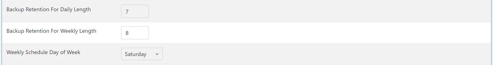

Introduction
To get started select the Backup & Maintenance Icon and choose Global Configuration
You will then find your global default settings that can be customized to your database needs. Similar to SQL jobs that are used for production databases.
The Backup window and Mantience window start time and lengths can be set. In this window backup, the database and a maintenance check will run and check the database structure.
With the retention date, you can set how long you would like to keep your backups for and thereby calculate how many backups you would like stored during the window time frame saving you valuable space.

The difference between the full backup and log backup is that the logs will only be backed up rather than the whole database allowing you to save much-needed space.
Note
%DefaultBackupLocation% - this is a placeholder for the SQL Server's backup path that you are making use of. You have the option of setting a custom backup path for your global config.
SQLPro allows one to make use of Azure blob storage and backup to the cloud with an estimated limit on backing up 100GB databases.
Setup Azure Database Backups
With SQLPro, offsite backups to Azure Blob Storage is a simple process.
Warning
Some Microsoft Azure experience is advised for using this guide.
You'll first need to create an Azure Storage account. To do this go to the Azure Portal and select Create a Resource >> Storage account
Take note of the Storage account name as you'll need this name later. Select Review + create followed by the Create button after reviewing the selections. It's also worth taking note of the Region, Performance and Redundacy settings and selecting options that will work for your organisation.
Go to your new Storage Account and select the Containers section. Create a new container called database-backups or any other name you like and take note of it.
Now there are two types of credentials for the storage container that work with SQLPro:
- Shared access token (prefered) - create credentials for the container
- Shared access signature - create credentials for the entire storage account
Shared Access Token
To create a shared access token open the new container that you've created and select the Shared access tokens
Under Permissions select Read and Write. Also be sure to select a reasonable Expiry date for the SAS token.
Once you click on Generate SAS token and URL copy down the Blob SAS token as you'll need it to set up the cloud backups for SQLPro.
Shared Access Signature
When viewing the Storage Account, select the Shared access signature tab.
Take care to select the same permissions as seen in the screenshot below and be sure to select a End date for the signature.
Once you click on Generate SAS and connection string copy down the SAS token as you'll need it to set up the cloud backups for SQLPro.
Warning
When you copy the SAS token, take off the "?" at the start of the token else the token won't work
SQLPro Cloud Backup Setup
Navigate to the Backup and Maintenance >> Global Configuration screen
Complete the entries as follows (fill in the #StorageAccountName# and #ContainerName# values with real values):
| Field Name | Value |
|---|---|
| Default Full Backup Path | https://#StorageAccountName#.blob.core.windows.net/#ContainerName#/%ServerName%/ |
| Default Log Backup Path | https://#StorageAccountName#.blob.core.windows.net/#ContainerName#/%ServerName%/logs/ |
| Azure Blob Storage Credentials | SAS token that you took note of earlier |
See example below
Note
The %ServerName% variable is dynamic and in this case it will create a seperate folder in blob storage for each server that you working with.